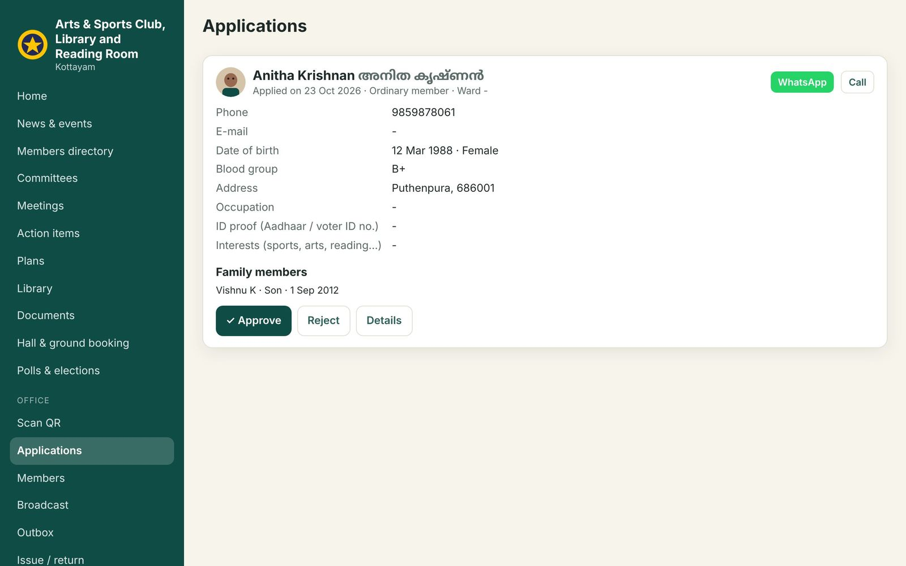
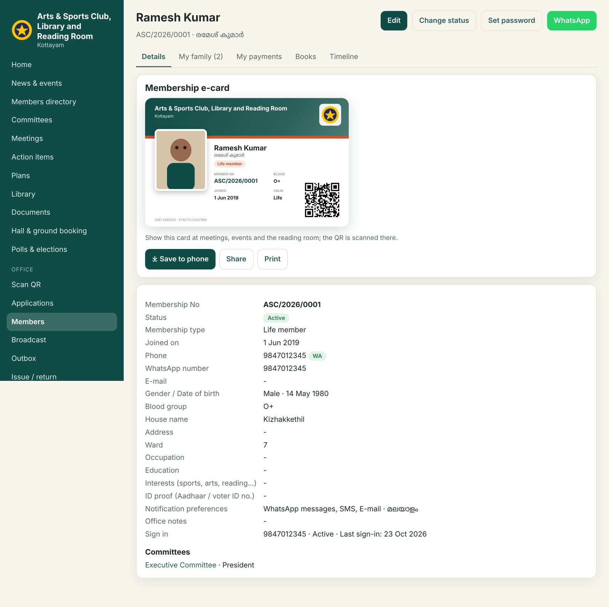
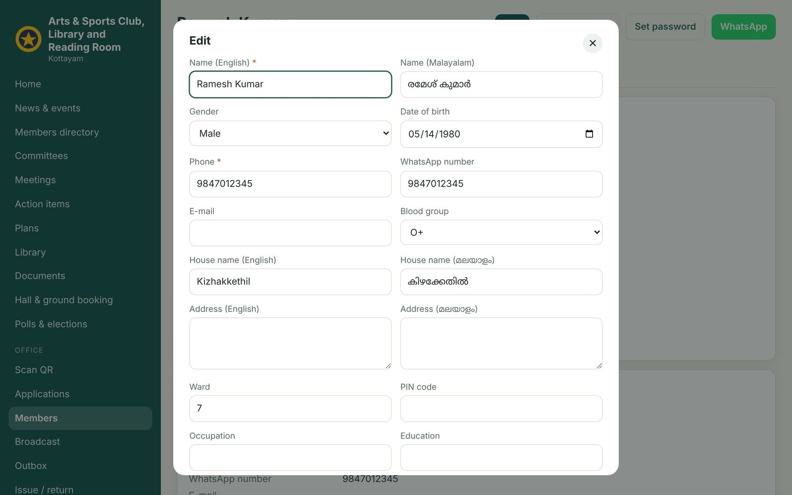
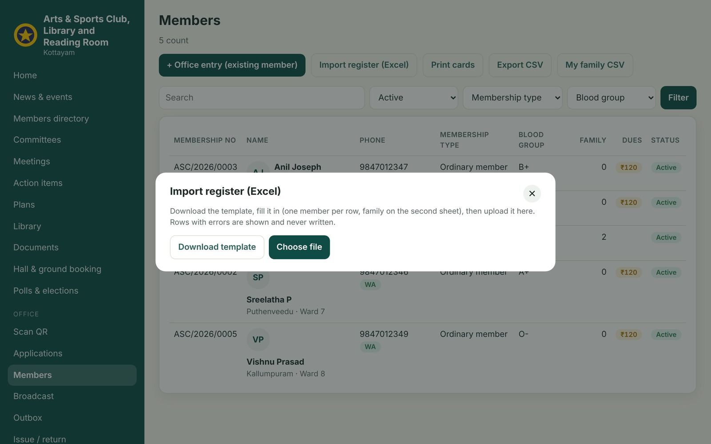
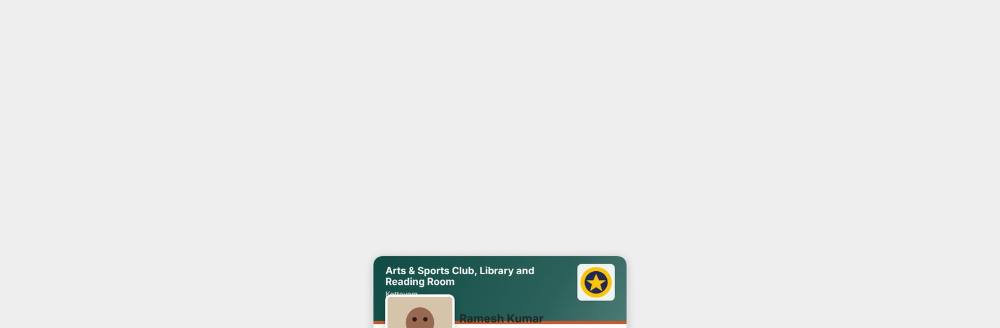

Part C · Office
17
Applications and the members register
Approve, number, maintain
At a glance
- Approving issues the next membership number and messages the member their number and sign-in.
- The member page holds everything: details, family, payments, books, timeline, e-card.
- The old register can be imported from Excel in one go.


- Approve sets the type (the applicant's choice can be changed), issues the number and sends the welcome message.
- Members the register with search and filters (status, type, ward, blood group); export to CSV; print e-cards for a filter.
- Member page tabs for details, family, payments, books and the timeline; buttons to edit, change status (active, inactive, expelled, deceased), set a password, and WhatsApp the member.
- Family add or verify family members; each verified family member can be registered for events.
- Import register download the Excel template, fill it (one row per member, number optional), upload; members get their numbers and can sign in with their phone and a first password you set.




⚠️
Changing a member's status to inactive keeps every record; expelled and deceased also stop messages. Nothing is deleted.